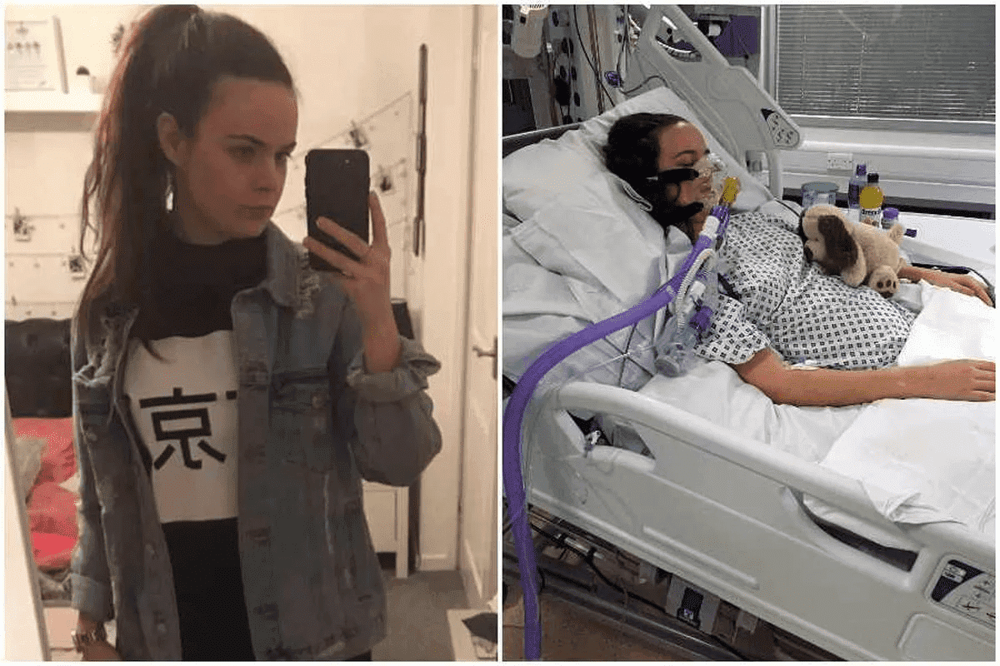
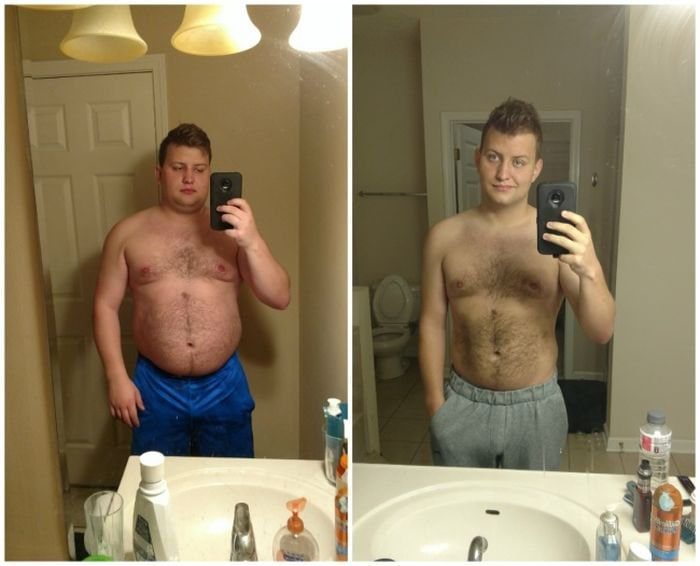

Megdöbbentette a közvéleményt egy közelmúltban történt eset - egy 18 éves budapesti diák kómába esett, miután fogyókúrás tablettákat fogyasztott. Az orvosok világszerte aggódnak az eset miatt, és a fogyókúrás termékek ingyenes értékesítésének betiltását követelik.
A probléma megértése érdekében összegyűjtöttük az orvostudomány vezető szakértőinek több véleményét. Íme, amit mondanak:
A fogyás modern módszerei gyakran mérgezéshez, tápanyaghiányhoz és különféle betegségek kialakulásához vezetnek. Negatív következmények jelentkezhetnek mind a kezdők, mind a tapasztaltak számára.
Valójában a legtöbb fogyókúrás módszer, akár tévében is hirdetett, rendkívül veszélyes az egészségre. A diéták és a testmozgás ugyanazon az elven működnek: tedd stressz állapotba a szervezetet, és használd fel a teljes energiakészletet. Az ilyen taktika ahhoz vezet, hogy a szervezet sebezhetővé válik a külső környezet veszélyeivel szemben.
A tablettákkal még rosszabb a helyzet. A kémiai összetevők megtámadják a szervezetet, nem csak sebezhetővé teszik, hanem a leggyengébb pontokat is elérik, és olyan szörnyű betegségek kialakulását idézik elő, mint a cöliákia, cukorbetegség, Crohn-betegség, gyomorfekély, szívelégtelenség és mások.
Teljesen lehetetlen fogyókúrás gyógyszereket orvos felírása nélkül használni. Ez súlyos következményekkel járhat, ahogy az egy budapesti diákkal is megtörtént.
Ahogy Roza, a diák a sürgősségi orvosnak elmondta, csak pár napig szedett diétás pirulákat. Ez az idő azonban elég volt ahhoz, hogy megtámadja a fiatal szervezetet, megfosztja energiatartalékától, majd súlyos allergiás reakciót váltson ki.
Tudom, hogy most, majdnem egy héttel az eset után Roza már kijött a kómából, és most intenzív osztályon orvosi felügyelet mellett van. A lány nagy valószínűséggel élni fog, de mik a következményei... hogy felépül-e a mérgezésből, vagy egy életre rokkant marad, ez a kérdés nyitott marad.
Nem ez az első eset, hogy a népszerű fogyókúrás módszerek ilyen negatív eredményhez vezetnek. Sajnos évről évre több az ilyen eset.
Azonban nem lehet mindenért csak az embereket hibáztatni, akik népszerű módszerekkel próbálnak fogyni, meg lehet őket érteni. Gyakran egyszerűen nincsenek tisztában a biztonságos alternatívával. Ahhoz, hogy megtudja, orvoshoz kell mennie, és ez kínos.
Így hát elmennek a barátokhoz, vagy ami még rosszabb, a patikákhoz, abban a reményben, hogy megoldást találnak. És ott találkoznak kapzsi gyógyszerészekkel, akiknek az a célja, hogy minél többet adjanak el. A gyógyszerészek nem orvosok, nem felelősek az életekért, nem gondolnak a következményekre, és hallgatnak a kockázatokról.
Roza ugyanezt az utat követte, vegyszerekkel töltött tablettákat vett be, és alig egy hét múlva kómába esett. Kötelességemnek tartom mindent megtenni az ilyen esetek megelőzése érdekében, ezért szeretnék beszámolni az olvasóknak olyan hatékony fogyókúrás termékekről, amelyek nem ártanak.
Létezik egy kis kategória az igazán hatékony fogyókúrás termékeknek, amelyek recept nélkül és előzetes orvosi konzultáció nélkül használhatók. Kevés ilyen termék van, de vannak. Közülük a gyógynövény-kiegészítőt tartják vezetőnek.
Miért biztonságos termék a ? Mivel ez a kiegészítés csak természetes összetevőket tartalmaz. Veszélyes vegyszerek nélkül – csak gyógynövényekből származó előnyök.
A egy 100%-ban természetes komplex a fogyás, az alakformálás és az általános jó közérzet érdekében. Nagy mennyiségben tartalmaz biológiailag aktív anyagokat, vitaminokat és antioxidánsokat.
Természetes összetétele ellenére a termék hatékonysága nem rosszabb, mint a kémiai társainak. Ezzel mindössze 4 hét alatt 10-15 kg-ot fogyhat.
A alkalmazása során nem kell diétát követnie vagy sportolnia. Mindössze napi kétszer 30 cseppet kell hígítani egy pohár vízben, lehetőleg étkezés előtt.
Más súlycsökkentő módszerekkel ellentétben a hatása a test erősítésére és a természetes folyamatok normalizálására irányul. Egyszerűen fogalmazva, a segít a szervezetnek az anyagcsere-folyamatok létrehozásában és a folyadékpangás megszüntetésében. Mivel jó formában van, a test önállóan megszabadul a zsírlerakódásoktól a problémás területeken.
Ezt a kiegészítést minden fogyni vágyó páciensnek ajánlom, és nincs olyan ember, akinek ne lenne haszna belőle.
Íme néhány fotó pácienseimről, akik lefogytak a segítségével:
Benkó Enikő
29 éves
Forgáts Judit
54 éves
Rácz Natália
41 éves
Úgy gondolom, hogy az egészségének kockáztatása és a veszélyes fogyókúrás módszerek - diéták, tabletták és fizikai aktivitás - használata teljesen indokolatlan, ha létezik olyan hatékony termék, mint a .

Sajnos nem ritka az olyan eset, mint a budapesti diák esete. Az emberek továbbra is a diétát vagy a gyógyszerészeti tablettákat a fogyás jó eszközének tartják.
Szerencsére az elmúlt két évben Magyarországon is megjelentek a biztonságos fogyókúrák. Közülük a legnépszerűbb a – természetes kivonatokon alapuló gyógynövény-kiegészítő: kurkuma, indiai lótusz és griffonia.
Ezt a terméket élvonalbelinek tartom, és elsődleges súlycsökkentő és megelőző eszközként egyaránt ajánlom. És mindez azért, mert a kiegészítésnek nincs negatív hatása, a fogyás nem a kiszáradás vagy az étrend csökkentése miatt következik be, hanem az anyagcsere felgyorsulása miatt.
A alkalmazása során különböző mikrofolyamatok egész komplexuma megy végbe a szervezetben. Közülük a legfontosabb az anyagcsere felgyorsítása. A molekulák a méreganyagokhoz kötődnek, és ezekkel együtt kiürülnek a szervezetből. Ezzel a folyamattal párhuzamosan más hasznos molekulák észlelik a zsírsejteket, összeragasztják és eltávolítják – ugyanazt a zsírt, amely a gyomron és a combon rakódik le.
A szervezet megtisztításával a kiegészítő elősegíti az anyagcsere serkentését. Ezzel párhuzamosan a szervezet megtanulja, hogy ne halmozzon fel fehér zsírt, ez segít megszilárdítani a fogyás eredményeit.
Tehát mindössze egyetlen, átlagosan 4-6 hétig tartó kúra alatt a szervezet teljesen újjáépül a felgyorsult anyagcsere érdekében, és önállóan szabályozza a testzsírt, megakadályozva, hogy azok újra felhalmozódjanak. Ez azt jelenti, hogy a leadott kilók soha nem jönnek vissza!
Jelenleg az egyetlen ajánlásom túlsúlyos betegek számára a . A betegek 100%-ának 99%-a kiváló eredménnyel tér vissza. Nemcsak lefogynak, hanem javítják az általános közérzetet is. Ezt semmilyen diéta, tabletta, nemhogy a zsírleszívás adja meg!

Az elmúlt 10 évben az elhízás szörnyűvé vált. Egyre többen fordulnak orvoshoz segítséget kérve a fogyás érdekében. Leggyakrabban ezek az emberek már megpróbáltak maguktól fogyni diéták, edzőterem, sőt műtétek segítségével. De nem érték el az eredményt, vagy az eredmény minimális volt, aránytalan a megtett erőfeszítésekhez képest.
Általában a korábbi próbálkozások helyrehozhatatlan egészségkárosodást okoznak, még akkor is, ha maga a beteg nem észlel változást az állapotában. Az okozott kár nem mindig olyan súlyos, mint a budapesti diák esetében. De mindenesetre a szervezet legyengül, hajlamos allergiára és egyéb betegségekre.
Ez megnehezíti a további ajánlások hozzárendelésének folyamatát. Gondolnia kell arra, hogy ez vagy az a termék hogyan befolyásolja a páciens testét, mondjuk egy allergiás beteg vagy egy fiatal anya esetében.
Amit szeretek a -ben, az az, hogy a termék 100%-ban biztonságos. Célja az immunrendszer erősítése, és nem okoz mellékhatásokat. Olyan betegeknek ajánlom, akiknek korábban hormonzavara volt, vagy gyomor-bélrendszeri problémáik vannak és segít! A betegek visszajönnek és megköszönik az ajánlást, mert segítségével pár hét alatt sikerült 10 vagy több kilogrammot leadniuk.
A SZERKESZTŐ MEGJEGYZÉSE: Az orvosi kezdeményezésnek és az Egészséges Népesség Alapítványnak köszönhetően a promóciós hetet tart. - -ig az eredeti termék 50% kedvezménnyel kapható.
Ha 50% kedvezménnyel szeretne terméket kapni, töltse ki az alábbi megrendelőlapot. Írja be nevét és telefonszámát a jelentkezés mezőibe, és várja meg egy alkalmazott hívását a részletek tisztázása érdekében. A rendelést futárszolgálattal 3-5 napon belül házhoz szállítjuk. Fizetés átvételkor.

HOZZÁSZÓLÁSOK:
Gyerekkorom óta kövér vagyok. Egész életemben először a szüleim, majd a feleségem fogyókúráztak, korlátozták az étkezést. 25 éves koromtól aktívan kezdtem tablettákat vásárolni. Tönkretettem a gyomrom, de soha nem fogytam. Aztán már aláásott egészséggel elmentem az orvoshoz, aki javasolta a -et. Kúránként 6 csomagot rendeltem, és az utasítások szerint naponta kétszer alkalmaztam. Szóval 1,5 hónap alatt 15 kg-ot fogytam. Hat hónappal azután, hogy befejeztem a szedését, most intuitív módon eszem, időnként édességgel kényeztetem magam, miközben nem hízok. Életemben először érzem magam teljes embernek :)
15 éves korom óta fogyok :( Most 27 éves vagyok, teljesen leállt az anyagcserém. Második hete szedem a kurzust, úgy érzem, hogy gyorsabban kezdtem oltani az éhségem, de még mindig félek megmérni magam.
Helyesen mondja az orvos, bölcsen kell megközelíteni a fogyást! A nővérem egész életében fogyni próbált. Amit egyszerűen nem próbált ki - tabletták, diéták, intenzív sport, éhség. A szervezete nem bírta és feladta, 30 évesen cukorbetegségben szenvedett. Természetesen, amikor fogyni akartam, nem ismételtem meg a hibáit, és elkezdtem biztonságos fogyókúrás terméket keresni az interneten. Így akadtam rá a -re. Éééés -20 kg 2 hónap kurzus után! Most egészségesebbnek és energikusabbnak érzem magam, mint valaha!
Vivien, hú! Felajánlottad a nővérednek, hogy vegyen be kurzust?
Dóra, természetesen felajánlottam! Közvetlenül azután, hogy meggyőződtem a termék hatékonyságáról, azonnal azt tanácsoltam a nővéremnek, hogy vegyen be ő is. Ezenkívül orvoshoz fordult, aki engedélyezte a használatát. Így 3 hónap alatt cukorbeteg nővérem 25 kg-ot fogyott.
Úgy tűnik számomra, hogy nem az a fontos, hogy mennyit sikerült fogyni, hanem az, hogy mennyi ideig lehetett visszatartani a súlygyarapodást a fogyás után
Saját tapasztalatból mondom, hogy a kúra után nem fenyeget a súlygyarapodás! Egy éve elvégeztem a kurzust, 20 kg-ot fogytam. Egy év alatt híztam 1,5 kg-mot. Ugyanakkor azt eszem, amit akarok, és nem kínzom magam edzéssel.
Csenge, fontos megérteni, hogyan történik a fogyás a -mel. Ez a termék segít a természetes folyamatok kialakításában a szervezetben: szénhidrát-anyagcsere - ennek köszönhetően a test fogy. A kúra elvégzése után, amikor minden rendszer jó állapotban van és zavartalanul működik, a szervezetnek nincs szüksége testzsír felhalmozására, így nem hízik vissza.
Tisztelettel: Dr. Györfy DanielSzeretném kipróbálni, de az ára véleményem szerint kicsit magas. 2 csomag fogyókúrás tablettát tudok venni a gyógyszertárban ugyanezért a pénzért...
Olvasta a cikket? Az orvos azonnal elmagyarázza, miért ne vásároljon diétás pirulákat. Ha kockára akarja tenni az életét, menjen tablettákért. Ha nem, akkor hallgassa meg orvosát, és használja a bevált és biztonságos terméket.
Valójában tévedsz, ha azt gondolod, hogy megtakarítasz. A jó, mert elvégezted az 1. kurzust, és megfeledkezel mindenről, ami a fogyással kapcsolatos. A tablettákat pedig folyamatosan szedned kell + ahhoz, hogy a tabletták működjenek, többet is ki kell próbálni, és meg kell találni, hogy melyik működik igazán a szervezetben. Ennek eredményeként mindez sok időt és erőfeszítést igényel. Miért bonyolítod az életed, ha biztonságosan és hatékonyan fogyhatsz a segítségével.
Ki akarom próbálni a kiegészítőt. Megértem, hogy egy kurzus elvégzése lesz a leghatékonyabb. Kb hány csomag kell 1 kurzushoz?
Igaza van, a legjobb eredményt a kurzus alkalmazásával éri el. Egy kurzushoz (4 hét) 4 csomag szükséges. Ez az egészségi állapottól és a kezdeti súlytól függően átlagosan 10-15 kg fogyáshoz elegendő.
Tisztelettel: Dr. Györfy DanielUgyan már, az ára nevetséges. Egy ilyen wow hatásért 3-4-szer többet adnék. Vedd a -et, biztosan nem fogod megbánni. 1 kúra alatt 10 kilót dobtam le különösebb diéta és sportolás nélkül. Klassz, hogy a kúra végeztével nem jött vissza a kiló, remélem ez így megy tovább :)
Szülés után sokat híztam. Persze igyekeztem nem nagyon pánikolni, de az életminőség romlott. Nem éreztem magam szexinek, komplexek jelentek meg. Zaklatni kezdett a férjem, akit hűtlenséggel gyanúsítok. Nem bírta elviselni, átkutatta az egész internetet, és megszerezte nekem a et. 4 hónap alatt visszanyertem a korábbi súlyomat, még magabiztosabbnak érzem magam, mint korábban, és a férjem elégedett :)
Kétszer kezdtem el a kurzust. Az első alkalom valahogy komolytalan volt, egyszer ittam, kettőt kihagytam. Kevés volt a hatása. A második alkalom már tudatosabb volt, hígítottam a cseppeket és 1,5 hónapig ittam rendszeresen. Mínusz 11 kilogramm és sikkes alak - ez történt :) Azt hiszem, amíg van raktáron, veszek még pár csomagot, hátha 🙂
Elégedett vagyok a súlyommal, de rossz az anyagcserém. Vettem több csomagot a kurzusra. Próbálom javítani az anyagcserémet. A bőr minősége, munkaképessége, sőt a várható élettartam is nagyon múlik rajta...
Vettem et a feleségemnek. 9 csomagot rendeltem 3 hónapra. Így két hónap alatt mindent ledobott, amit akart. Csodálatosan néz ki, a bőr rugalmas, semmi sem lóg sehol - egy baba. Engedélyével teszek fel képeket :)
Elkezdtem a kurzust. A nagyobb motiváció kedvéért vettem 2 számmal kisebb farmert. Három héttel ezelőtt még a lábamat sem tudtam betenni. Ma már felvettem, nehezen és mégsem köt össze :) De semmi, még egy hónap és rendesen jó lesz 🙂
Semmilyen megfelelő étrend nem segít a fogyásban, ha az anyagcseréd megzavarodik. Egy éve küzdök ezzel a problémával. Amit nem eszek - minden az oldalakon van. Rettenetesen dühös voltam, amíg el nem végeztem a kurzust. Két hónapja használom rendszeresen a kiegészítőt, és tudod mit, a hatás elképesztő! Mínusz 6 kg 2 hét alatt, tónusos alak, rugalmas, puha bőr – mindez a -nek köszönhetően. Szeretnék még egy méretet fogyni, hogy beleférjek a 10 éve 20 évesen viselt farmerbe!!
13 kilót fogytam a segítségével, amit a terhesség alatt híztam! Nagyon elégedett vagyok az eredménnyel :)
Félek rendelni az interneten, hátha hamisítvány...
Ismétlem, eredeti termék kedvezményes megrendeléséhez töltse ki a fenti hivatalos megrendelőlapot. Adja meg nevét és telefonszámát, ezt követően az üzemeltető felveszi Önnel a kapcsolatot a részletek tisztázása érdekében. Fizetés CSAK ÁTVÉTELKOR. Egészséget és sok szerencsét kívánok.
Tisztelettel: Dr. Györfy Daniel